Inhalt Index DeskTop Bronstein

 Lineare Integralgleichungen Fredholmsche Integralgleichungen 2. Art Numerische Verfahren für Fredholmsche Integralgleichungen 2. Art Kernapproximation
Lineare Integralgleichungen Fredholmsche Integralgleichungen 2. Art Numerische Verfahren für Fredholmsche Integralgleichungen 2. Art Kernapproximation


Für eine spezielle Kernapproximation auf dem Integrationsintervall [a,b]=[0,1] wird
gewählt. Die Funktion 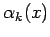 ist nur in dem Intervall 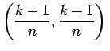, dem sogenannten Träger, ungleich Null (s. Abbildung).
Zur Bestimmung der Koeffizienten djk in (11.31a) betrachte man 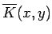 an den Stellen 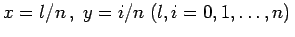. Dann gilt
und folglich 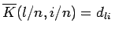. Aus diesem Grund setzt man 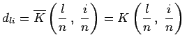. Die Gleichung (11.31a) hat damit die Form
Die Lösung von (11.31c) hat bekanntlich die Darstellung
Der Ausdruck 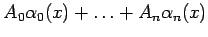 ist dabei ein Polygonzug, der an der Stelle xk=k/n den Wert Ak annimmt. Bei der Lösung von (11.31c) nach dem Verfahren für ausgeartete Kerne ergibt sich ein lineares Gleichungssystem für die Zahlen 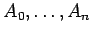:
Dabei ist
Die Zahlen bk in (11.36a) sind festgelegt durch
Werden die Zahlen cjk aus (11.36a) zur Matrix 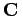, die Werte K(j/n,k/n) zur Matrix  und die Werte Ijk zur Matrix
und die Werte Ijk zur Matrix  zusammengefaßt, und wird aus den Zahlen 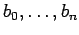 der Vektor 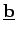 und aus den gesuchten Zahlen der Vektor 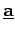 gebildet, dann hat das Gleichungsystem (11.36a) in Matrizenschreibweise die Form
zusammengefaßt, und wird aus den Zahlen 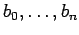 der Vektor 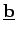 und aus den gesuchten Zahlen der Vektor 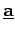 gebildet, dann hat das Gleichungsystem (11.36a) in Matrizenschreibweise die Form
Falls die Matrix 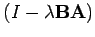 regulär ist, hat dieses System eine eindeutige Lösung 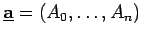.